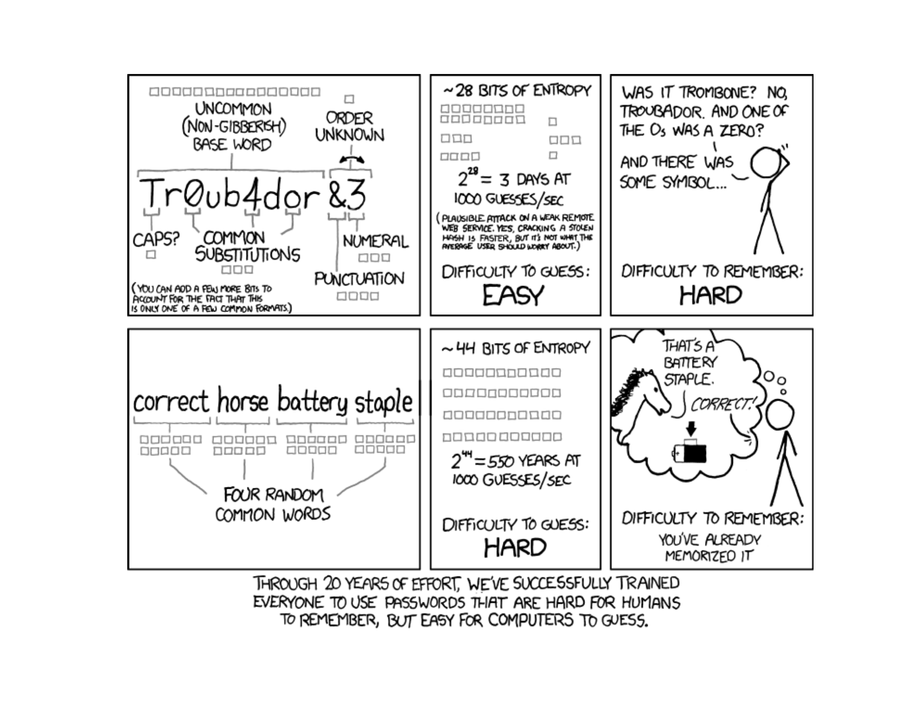
Lesson 5: Counting
Calendar
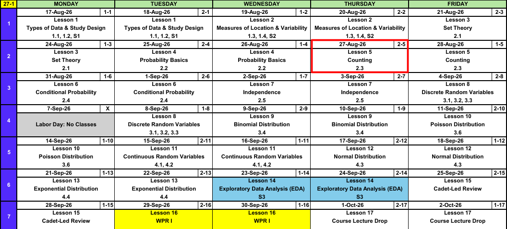
What We Did: Lessons 1 through 4
NoteReview: Data, Study Design, and Summaries (Lessons 1 and 2)
- Population vs sample, parameter (\(\mu\), \(\sigma\), \(p\)) vs statistic (\(\bar{x}\), \(s\), \(\hat{p}\)).
- Random sampling buys generalization, random assignment buys causation.
- Center: mean, median, trimmed mean. Spread: \(s^2\), \(s\), and the fourth spread \(f_s\).
NoteReview: Set Theory (Lesson 3)
- Experiment, sample space \(\mathcal{S}\), event as a subset of \(\mathcal{S}\).
- Union \(A \cup B\) is “or”, intersection \(A \cap B\) is “and”, complement \(A'\) is “not”.
- Mutually exclusive: \(A \cap B = \emptyset\).
- De Morgan: \((A \cup B)' = A' \cap B'\) and \((A \cap B)' = A' \cup B'\).
NoteReview: Probability Basics (Lesson 4)
- Three axioms: \(P(A) \ge 0\), \(P(\mathcal{S}) = 1\), and mutually exclusive events add.
- Complement rule: \(P(A') = 1 - P(A)\).
- Addition rule: \(P(A \cup B) = P(A) + P(B) - P(A \cap B)\).
- Equally likely outcomes: \(P(A) = N(A)/N\).
That last bullet is why we are here. A 30 player league picking a 5 person all star team has 142,506 possibilities, and nobody is listing those.
What We’re Doing: Lesson 5
Objectives
- Apply the product rule, permutations, and combinations to count outcomes. (SLO 7)
- Use counting techniques to compute probabilities of equally likely outcomes. (SLO 7)
Required Reading
Devore 2.3
Break!
Reese
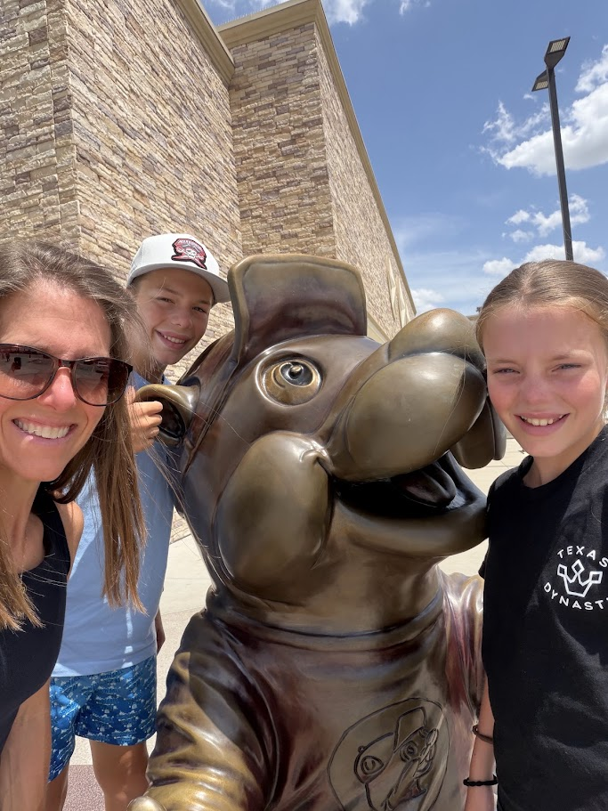
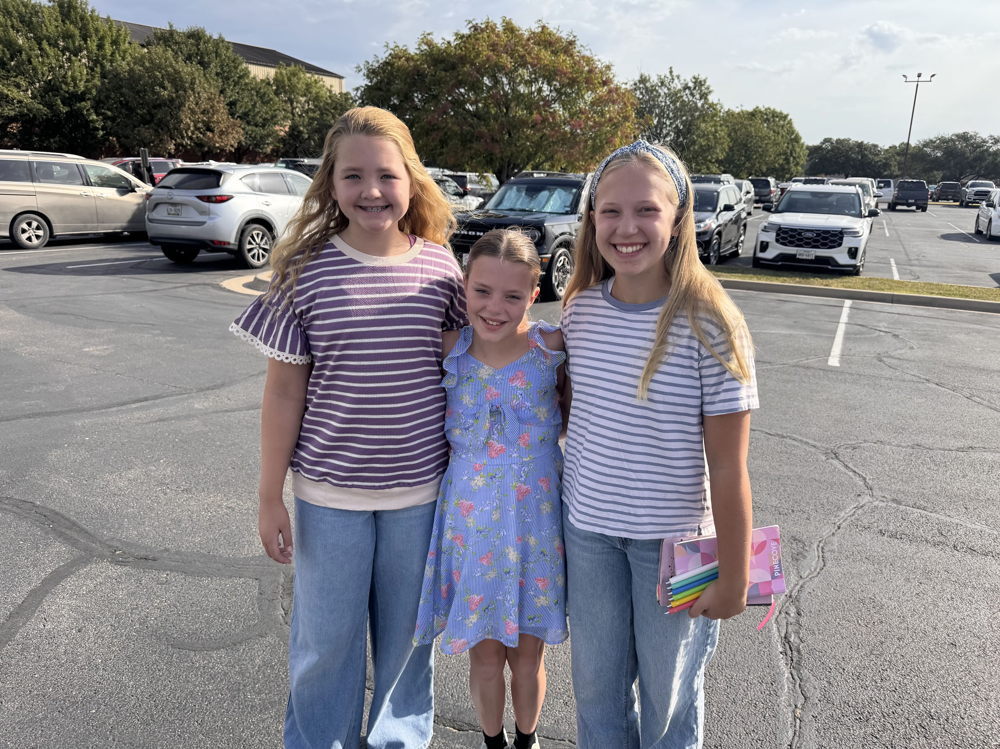
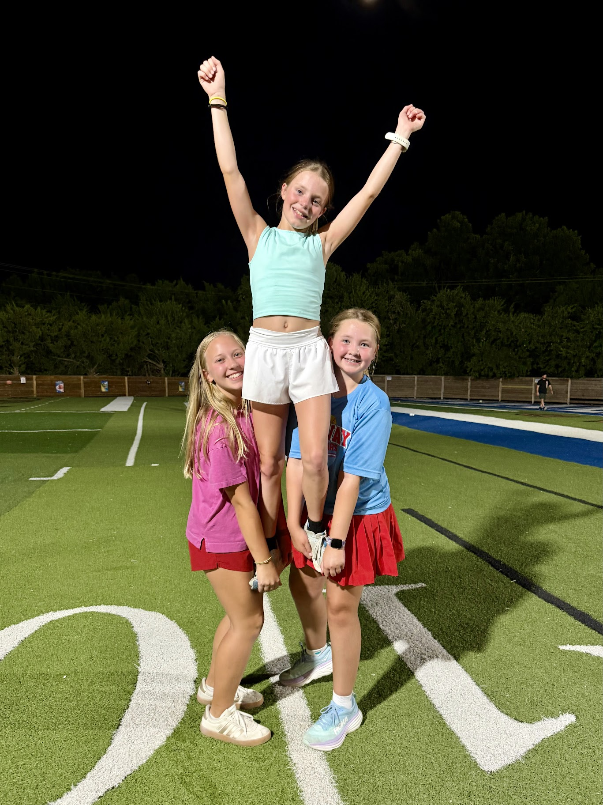
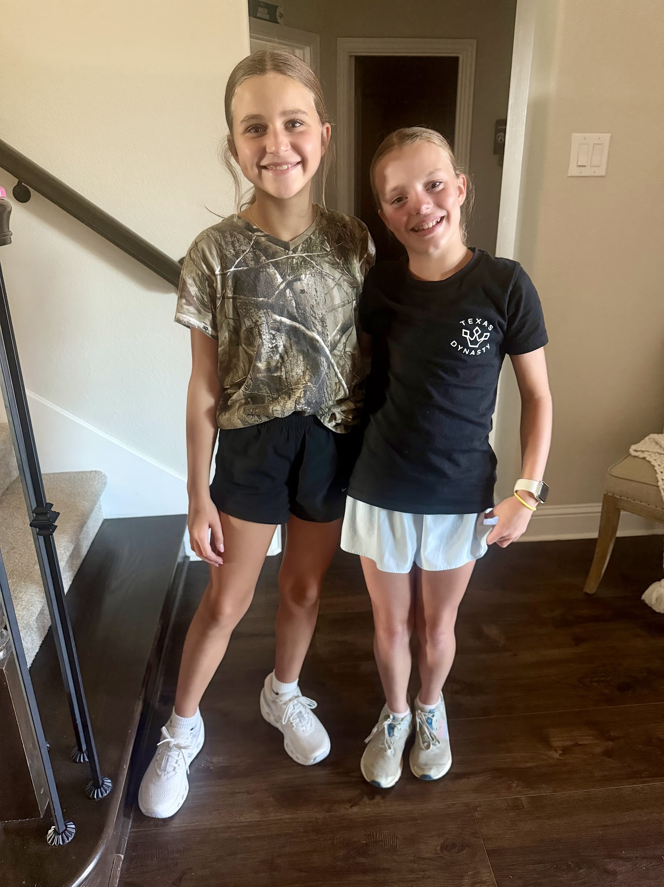
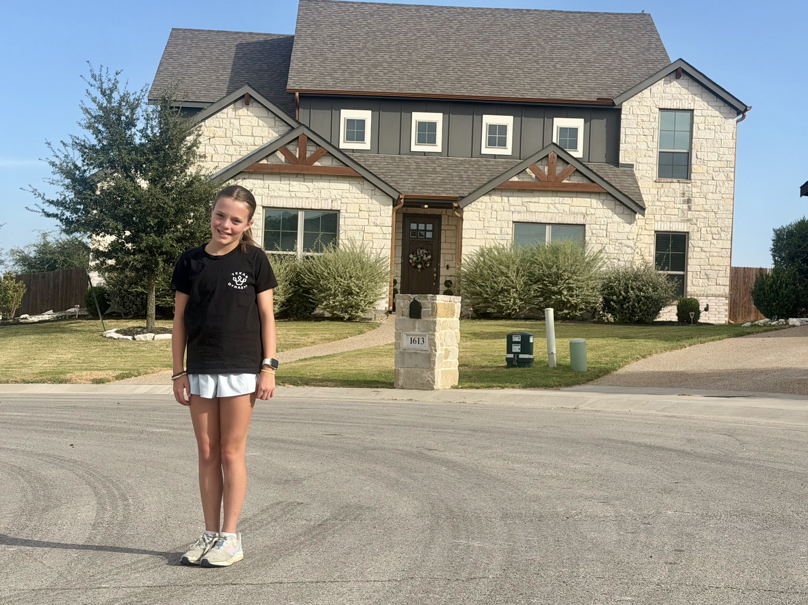
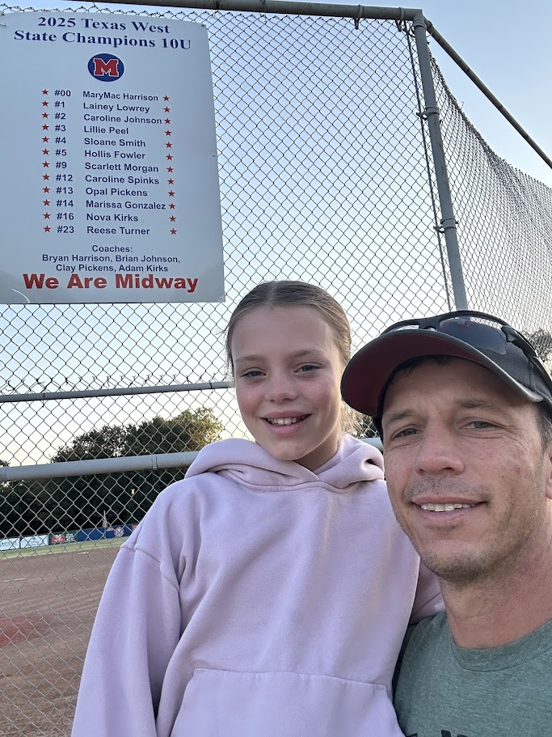
Cal
Book Return
The bookstore listed Tintle by mistake. Our text is Devore, 9th ed., and it is free online through Cengage Unlimited. A hard copy is optional.
- The return window is two weeks from purchase
- Start it yourself at bncvirtual.com/westpoint, then Your Account > Return Center
- If you do want a hard copy, shop around. The bookstore is $230.50 new and $172.75 used


Branch Week
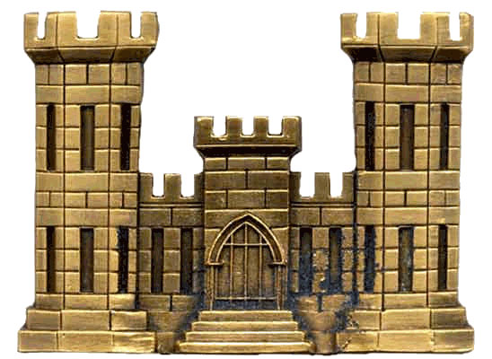
The Takeaway for Today
NoteKey Concepts from Lesson 5
- Product rule: \(n_1 n_2 \cdots n_k\)
- Permutation (order matters): \(P_{k,n} = \dfrac{n!}{(n-k)!}\)
- Combination (order does not): \(\dbinom{n}{k} = \dfrac{n!}{k!\,(n-k)!}\)
- They differ only by \(k!\)
- \(0! = 1\) and \(\dbinom{n}{k} = \dbinom{n}{n-k}\)
- All of it feeds \(P(A) = N(A)/N\)
Why Counting Is a Probability Topic
Last lesson ended here:
\[P(A) = \frac{N(A)}{N}\]
Both pieces are counts. This whole lesson is about finding the simplest way to count the number of ways things can happen under different conditions.
Factorials: Arrange Everything
How many ways can we arrange all \(n\) objects in order?
How many ways can Cal’s coach set the batting order for his 9 starters? Nine players for the leadoff spot, eight left for the second, and so on down to one.
\[9 \times 8 \times 7 \times \cdots \times 2 \times 1 = 9! = 362{,}880\]
ImportantFactorial
\[n! = n(n-1)(n-2)\cdots(2)(1), \qquad 0! = 1\]
The number of ways to arrange all \(n\) objects in order.
Every count in this lesson is built out of \(n!\).
The Product Rule
How many ways can we build an outcome in \(k\) separate stages?
How many uniforms can Cal build from pants (grey or white), a jersey (red, blue, or white), and socks (blue or red)?
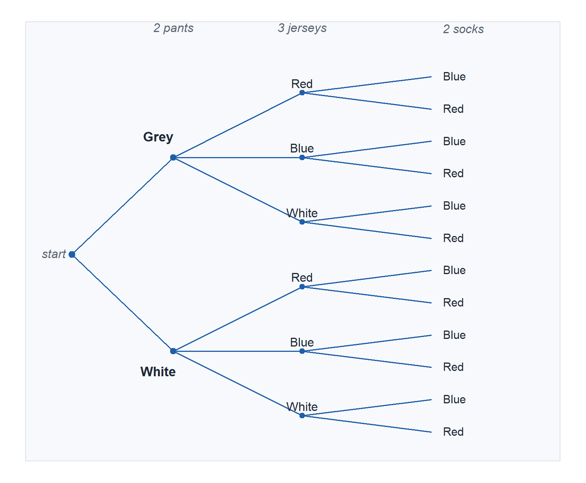
\[n_1 \times n_2 \times n_3 = 2 \times 3 \times 2 = 12\]
12 uniforms.
ImportantProduct Rule
An outcome built in \(k\) stages, with \(n_1\) ways at stage 1, \(n_2\) ways at stage 2 for each of those, and so on:
\[n_1 \times n_2 \times \cdots \times n_k\]
The batting order was this rule with the options shrinking by one at each stage. Here the stages have nothing to do with each other.
Sampling: Drawing k from n
The product rule just built a pool: 12 uniforms. Everything left today draws \(k\) items from one pool of \(n\). Three questions:
- How many ways can the coach pick a uniform for each of the 4 games this week, reusing uniforms freely?
- How many ways if no uniform repeats?
- How many ways can he pick which 4 uniforms get worn, sorting out the days later?
Two tests tell them apart:
- Does order matter? Swap two picks. Different outcome or the same one?
- Are repeats allowed (with replacement)?
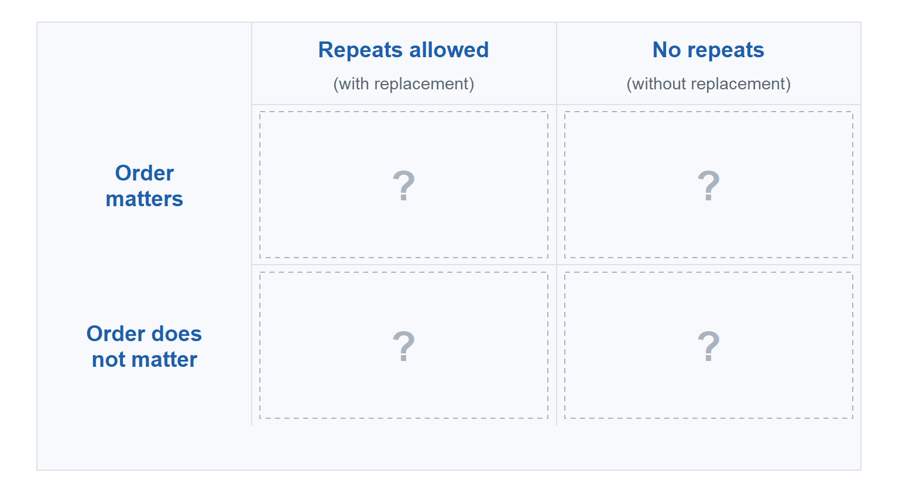
Order Matters, With Replacement
How many ways can we fill \(k\) ordered slots from the same \(n\) options, repeats allowed?
How many ways can the coach pick a uniform for each of the 4 games this week, reusing uniforms freely?
Order matters because the games are different days. Grey/Red/Blue then White/Blue/Red is not the same week as the reverse, so both get counted.
\[12 \times 12 \times 12 \times 12 = 12^4 = 20{,}736\]
ImportantWith Replacement
\(k\) picks from the same \(n\) options every time, order matters:
\[n \times n \times \cdots \times n = n^k\]
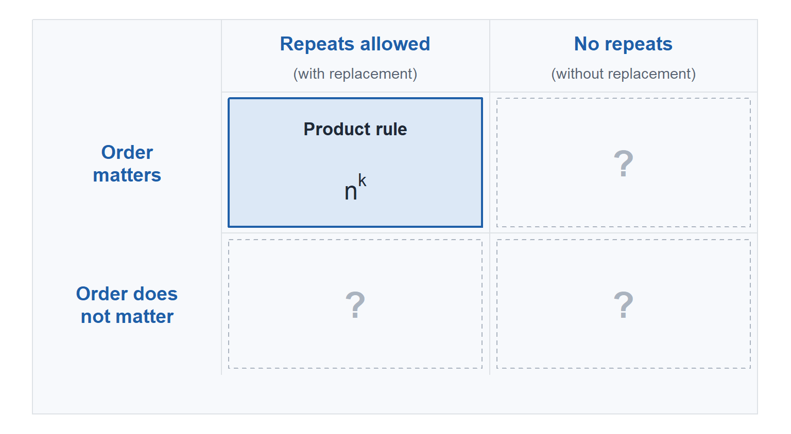
Order Matters, Without Replacement: Permutations
How many ways can we fill \(k\) ordered slots from \(n\) objects, no repeats?
How many ways can he do it for those same 4 games with no uniform repeated? Game 1 has 12 choices, game 2 has 11 left, game 3 has 10, game 4 has 9.
\[P_{4,12} = \frac{12!}{8!} = 12 \times 11 \times 10 \times 9 = 11{,}880\]
ImportantPermutations
An ordered subset of size \(k\) from \(n\) distinct objects.
\[P_{k,n} = n(n-1)\cdots(n-k+1) = \frac{n!}{(n-k)!}\]
with \(0! = 1\).
Both counts for the week are now in hand:
\[P(\text{all four games look different}) = \frac{11{,}880}{20{,}736} = 0.573\]
The \((n-k)!\) cancels the slots you never filled. When \(k = n\) nothing is left to cancel and \(P_{n,n} = n!/0! = n!\), back to arranging everyone.
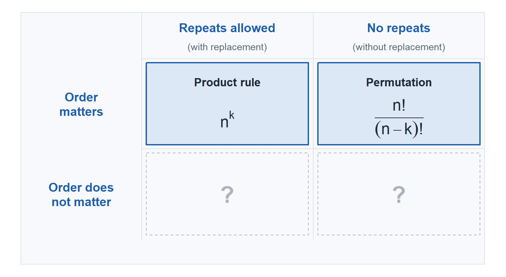
Order Does Not Matter, Without Replacement: Combinations
How many ways can we choose \(k\) of \(n\) objects when order does not matter?
How many ways can the coach pick which 4 uniforms get worn this week, sorting out the days later? Those same four in any other order is the same weekly set.
\[\binom{12}{4} = \frac{12 \times 11 \times 10 \times 9}{4!} = \frac{11{,}880}{24} = 495\]
ImportantCombinations
An unordered subset of size \(k\) from \(n\) distinct objects.
\[\binom{n}{k} = \frac{P_{k,n}}{k!} = \frac{n!}{k!\,(n-k)!}\]
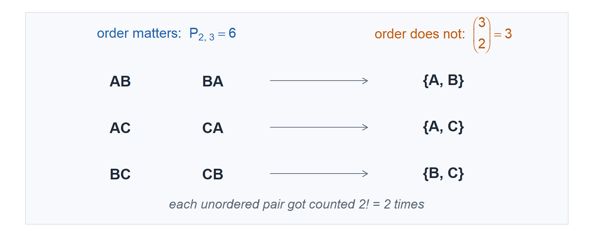
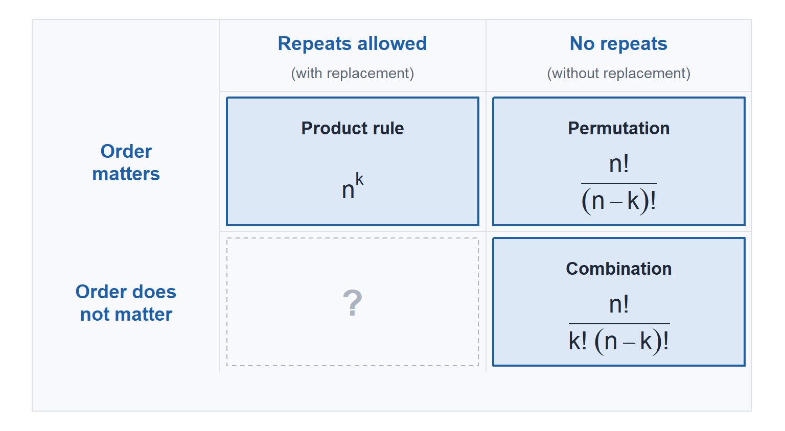
Order Does Not Matter, With Replacement (FYI)
How many ways can we choose \(k\) of \(n\) objects when order does not matter and repeats are allowed?
A donut shop has 12 flavors. You buy 4 donuts and they all go in one box, so the order does not matter, and nothing stops you from taking two of the same flavor.
\[\binom{n + k - 1}{k} = \binom{15}{4} = 1{,}365\]
Beyond MA206, so it stays greyed.
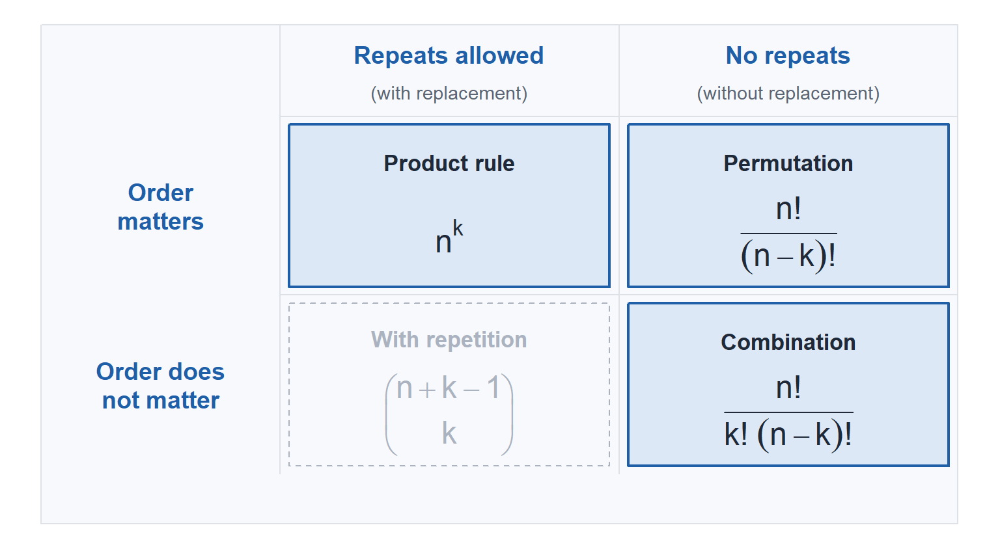
Counting to Get a Probability
TipThe pattern
\(N\) is the number of ways to make the selection at all. \(N(A)\) is the number of those with the property you want. Build \(N(A)\) in stages: pick from the group you want, fill the rest from what is left, then multiply.
Example: The All Star Team
Cal’s league has 30 players, 12 of them pitchers. 5 are picked at random for the all star team.
- How many teams are possible?
- \(P(\text{exactly 2 pitchers})\)?
- \(P(\text{no pitchers})\)?
- \(P(\text{at least 1 pitcher})\)?
TipAnswers
\[N = \binom{30}{5} = 142{,}506\]
Choose 2 of the 12 pitchers, then 3 of the 18 others: \[P = \frac{\binom{12}{2}\binom{18}{3}}{\binom{30}{5}} = \frac{66 \times 816}{142{,}506} \approx \mathbf{0.378}\]
\[P = \frac{\binom{18}{5}}{\binom{30}{5}} = \frac{8{,}568}{142{,}506} \approx \mathbf{0.060}\]
Complement of (c): \(1 - 0.060 = \mathbf{0.940}\).
The long way works too, one pitcher through five: \[\frac{\binom{12}{1}\binom{18}{4} + \binom{12}{2}\binom{18}{3} + \binom{12}{3}\binom{18}{2} + \binom{12}{4}\binom{18}{1} + \binom{12}{5}\binom{18}{0}}{\binom{30}{5}}\]
\[= \frac{36{,}720 + 53{,}856 + 33{,}660 + 8{,}910 + 792}{142{,}506} = \frac{133{,}938}{142{,}506} \approx \mathbf{0.940}\]
Five terms instead of one subtraction.
Board Problem
A section of 18 cadets has 7 who are prior service. 4 are picked at random for a panel.
- How many panels are possible?
- \(P(\text{exactly 2 prior service})\)?
- \(P(\text{no prior service})\)?
- \(P(\text{at least 1 prior service})\)?
TipAnswers
\[N = \binom{18}{4} = 3{,}060\]
Choose 2 of the 7 prior service, then 2 of the 11 others: \[P = \frac{\binom{7}{2}\binom{11}{2}}{\binom{18}{4}} = \frac{21 \times 55}{3{,}060} \approx \mathbf{0.377}\]
\[P = \frac{\binom{11}{4}}{\binom{18}{4}} = \frac{330}{3{,}060} \approx \mathbf{0.108}\]
Complement of (c): \(1 - 0.108 = \mathbf{0.892}\).
Stretch Problems
Four problems that sound like four different problems.
1 The string You are writing a string of exactly 10 zeros and 4 ones. How many strings can you write?
2 The shooter You finish the game 4 for 14 from the field. How many different ways could those makes and misses have fallen?
3 The walk Starting at \((0,0)\), you move to \((10,4)\) going only right or up. How many ways can you do this?
4 The box The mess hall has 5 flavors of donut and you are taking back a box of 10. Unlimited of any flavor, and a box is just a box, so what order they sit in does not matter. How many different boxes are there?
TipAnswers
All four are \(\mathbf{1001}\).
One example, written four ways. The same 4 of the 14 slots get picked every time.
![Four rows of 14 slots each, lined up in the same columns. Row 1, the string, is zeros with ones in slots 4, 7, 9 and 11. Row 2, the shooter, is the same zeros and ones, where a one is a make. Row 3, the walk, is right arrows with up arrows in those same four slots. Row 4, the box, is donuts with dividers in those same four slots, reading 000, divider, 00, divider, 0, divider, 0, divider, 000. Highlighted bands run down all four rows through slots 4, 7, 9 and 11. The caption reads same 14 slots, same 4 picks, every time.](lesson-5_files/figure-html/stretch-alignment-1.png)
1. The string. Unordered, without replacement. You are choosing which 4 of the 14 slots hold a one: \(\dbinom{14}{4} = 1001\). A slot cannot be chosen twice and the order you filled them in is not part of the answer.
2. The shooter. Unordered, without replacement. Same cell, same count: choose which 4 of the 14 attempts went in, \(\dbinom{14}{4} = 1001\). Write a make as a one and a miss as a zero and this is problem 1 with different clothes.
3. The walk. Ordered, with replacement. Getting there takes 10 rights and 4 ups, so 14 steps, and each one is a free choice of two: \(2^{14} = 16{,}384\) sequences in all. Finishing at \((10,4)\) means exactly 4 of the 14 steps were up: \(\dbinom{14}{4} = 1001\). Call right a zero and up a one and you are back at problem 1.
4. The box. Unordered, with replacement. Stars and bars. A donut is a \(0\) and a divider between flavors is a \(|\), so row 4 reads \(000|00|0|0|000\): three of the first flavor, two of the second, one each of the next two, three of the last. Ten donuts and 4 dividers to make 5 flavors fill 14 slots, and the box is settled the moment you say which 4 slots hold the dividers: \(\dbinom{14}{4} = 1001\). Those 4 dividers are the 4 ones again. The formula \(\dbinom{n+k-1}{k}\) with \(n = 5\) flavors and \(k = 10\) donuts gives \(\dbinom{14}{10}\), the same count read off the donut slots instead of the divider slots, and \(\dbinom{14}{10} = \dbinom{14}{4}\).
Nobody’s problem lands in the fourth cell, ordered without replacement, and it is worth walking there anyway. Place the four ones into the 14 slots one at a time: \(14 \cdot 13 \cdot 12 \cdot 11 = P_{4,14} = 24{,}024\). That counts every string \(4! = 24\) times, once for each order you could have dropped the identical ones in, so \(24{,}024 / 24 = 1001\). That is \(\dbinom{n}{k} = P_{k,n} / k!\) in the open.
Before You Leave
Today
- Product rule: \(n_1 n_2 \cdots n_k\)
- Permutation \(P_{k,n} = \dfrac{n!}{(n-k)!}\) when the chosen objects get roles
- Combination \(\dbinom{n}{k} = \dfrac{n!}{k!(n-k)!}\) when they do not
- They differ only by \(k!\)
- \(0! = 1\) and \(\dbinom{n}{k} = \dbinom{n}{n-k}\)
- “At least one” still means take the complement
Any questions?
Next Lesson
Lesson 6: Conditional Probability
- Compute conditional probabilities and apply the multiplication rule
- Apply the Law of Total Probability
- Apply Bayes’ Theorem to update probabilities given new information
Reading: Devore 2.4
Upcoming Graded Events
- WebAssign 2.3 - Due at the start of Lesson 6
- WPR I - Lesson 16 (covers Lessons 1-13)
- TEE - 15-18 Dec 2026